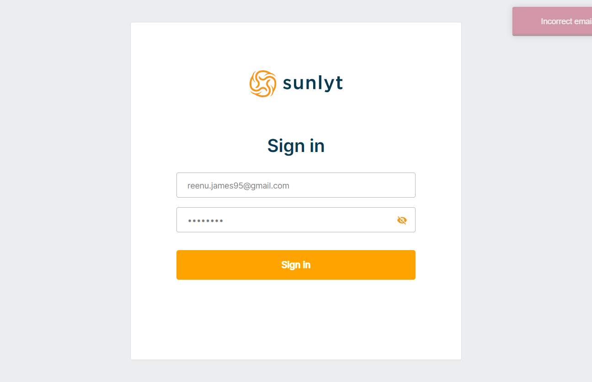
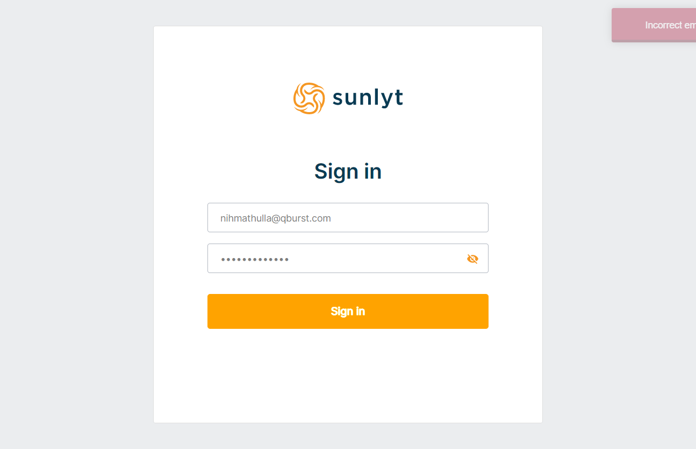

-
Test the login functionality
7:32:08 PM / 00:02:48:156 Fail
Test the login functionality
08.07.2022 7:32:08 PM 08.07.2022 7:34:56 PM 00:02:48:156 · #test-id=1PassVerify the login functionality with valid credentialsGiven Admin launch the applicationAnd Enter the valid login credentialsWhen Admin click on the login buttonThen Admin gets a toast message "User login success."And Admin redirected to the dashboard pageFailVerify the login functionality with invalid credentialsGiven Admin launch the applicationAnd Enter the invalid login credentialsWhen Admin click on the login buttonThen Admin gets a toast message "Incorrect email or password."stepDefinitions.ApplicationHooks.addScreenshot(io.cucumber.java.Scenario)Verify_the_login_functionality_with_invalid_credentialsFailVerify the logout functionalityGiven Admin launch the applicationAnd Enter the valid login credentialsstepDefinitions.ApplicationHooks.addScreenshot(io.cucumber.java.Scenario)When Admin click on the login buttonStep skippedThen Admin gets a toast message "User login success."Step skippedAnd Admin redirected to the dashboard pageStep skippedWhen Admin click on the username in the dashboardStep skippedAnd Click on the logout buttonStep skippedThen Admin gets a toast message "You have been logged out successfully."Step skippedFailVerify the login functionality with a valid user app credentialsGiven Admin launch the applicationAnd Enter the valid user app login credentialsWhen Admin click on the login buttonThen Admin gets a toast message "Incorrect email or password."stepDefinitions.ApplicationHooks.addScreenshot(io.cucumber.java.Scenario)Verify_the_login_functionality_with_a_valid_user_app_credentials -
Test the User listing functionality
7:32:08 PM / 00:02:54:549 Fail
Test the User listing functionality
08.07.2022 7:32:08 PM 08.07.2022 7:35:03 PM 00:02:54:549 · #test-id=4FailVerify whether all the user names are displayed in the users listGiven Admin launch the applicationAnd Enter the valid login credentialsstepDefinitions.ApplicationHooks.addScreenshot(io.cucumber.java.Scenario)When Admin click on the login buttonStep skippedThen Admin gets a toast message "User login success."Step skippedAnd Admin redirected to the dashboard pageStep skippedWhen Admin click on the User List sub menu under the User menuStep skippedThen Admin should redirected to the user listing pageStep skipped
-
java.lang.AssertionError
2 tests
java.lang.AssertionError
2 failedStatus Timestamp TestName Fail 19:32:20 PM Then Admin gets a toast message "Incorrect email or password." Test the login functionality.Verify the login functionality with invalid credentials.Then Admin gets a toast message "Incorrect email or password."Fail 19:32:20 PM Then Admin gets a toast message "Incorrect email or password." Test the login functionality.Verify the login functionality with a valid user app credentials.Then Admin gets a toast message "Incorrect email or password." -
org.openqa.selenium.NoSuchWindowException
4 tests
org.openqa.selenium.NoSuchWindowException
4 failedStatus Timestamp TestName Fail 19:34:56 PM And Enter the valid login credentials Test the login functionality.Verify the logout functionality.And Enter the valid login credentialsFail 19:34:56 PM stepDefinitions.ApplicationHooks.addScreenshot(io.cucumber.java.Scenario) Test the login functionality.Verify the logout functionality.stepDefinitions.ApplicationHooks.addScreenshot(io.cucumber.java.Scenario)Fail 19:35:02 PM And Enter the valid login credentials Test the User listing functionality.Verify whether all the user names are displayed in the users list.And Enter the valid login credentialsFail 19:35:02 PM stepDefinitions.ApplicationHooks.addScreenshot(io.cucumber.java.Scenario) Test the User listing functionality.Verify whether all the user names are displayed in the users list.stepDefinitions.ApplicationHooks.addScreenshot(io.cucumber.java.Scenario)
Started
Aug 7, 2022 07:32:08 PM
Ended
Aug 7, 2022 07:35:03 PM
Features Passed
0
Features Failed
2
Features
Scenarios
Steps
Timeline
System/Environment
| Name | Value |
|---|---|
| AppName | Sunlyt Function Test Report |
| user | Nihamathulla |
| build | 1.3 |
| os | Windows |